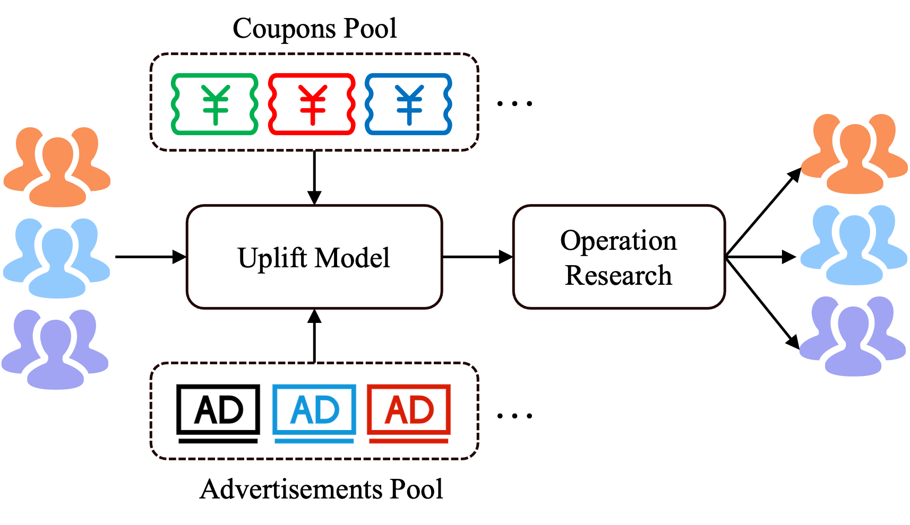
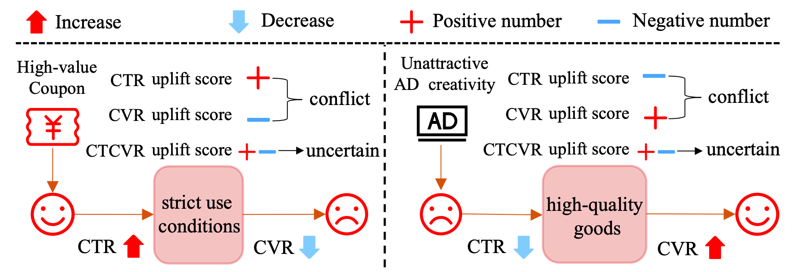
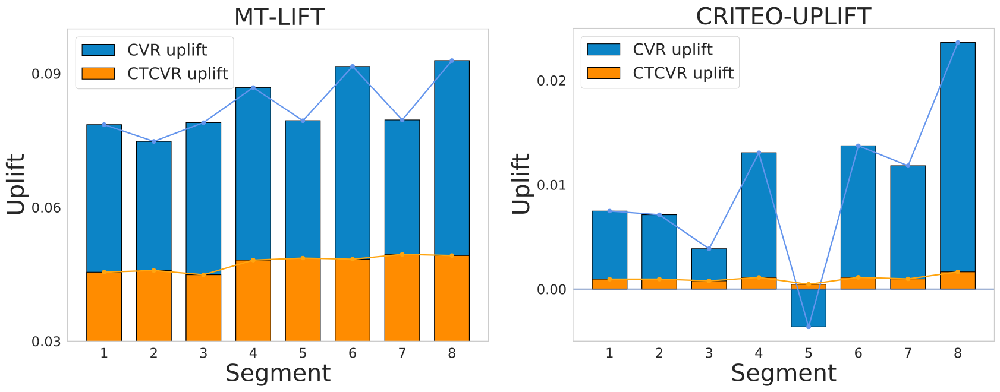
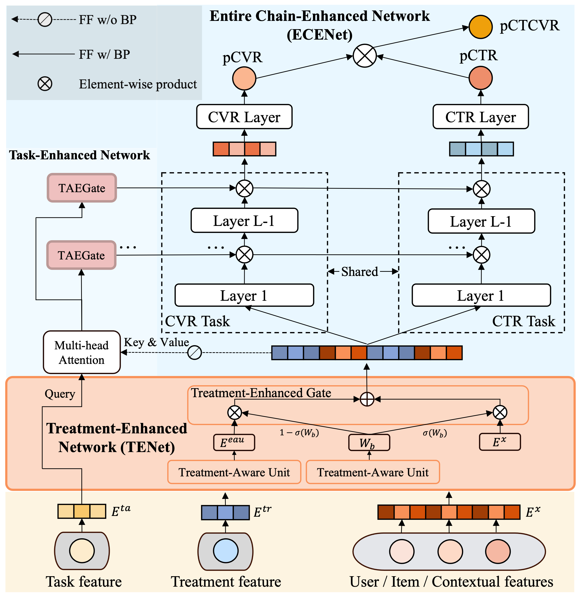

- CTCVR の差を推定クリック後の購入率の上がり幅ではなく、表示からクリックを経て購入する確率の上がり幅 \(\tau^Z_k(x)\) を、クーポン \(k\) ごとに推定する。
- AUUC 0.813 対 0.781MT-LIFT の CTCVR 課題で、ECUP と次点の EFIN の AUUC。ECUP は比べた 9 手法の中で最も高かった（Table 3）。
- ROI +7.4%Meituan での 2 週間のオンライン A/B テスト。クリック後の CVR で学習した T-learner と比べ、GMV は +5.3%、注文数は +5.1% だった（Table 5）。
クーポン配布では、アップリフトモデルの推定値をもとに施策を割り当てる
大手の EC プラットフォームはクーポン、割引、広告で利用を促す。論文によれば、多くのプラットフォームは二段階で運用している。まずアップリフトモデルで、施策ごとに利用者の反応がどれだけ上がるか（個人の処置効果、ITE）を推定する。次に、その推定値をもとに、費用の制約のもとで最適化の手法を使って施策を割り当てる。論文はアップリフトモデルを、この過程全体の基礎になるものと位置づけている。
アップリフトは、同じ人が処置を受けた場合と受けなかった場合の結果の差である。片方の結果しか観測できないので、正解ラベルのない反実仮想の問題になる。S-learner、T-learner、X-learner などの枠組みに、深層学習のモデルを組み込む方法が広く使われている。

クリック後の CVR だけを見ると、表示からの最終的な効果と符号が食い違うことがある
論文は表示からクリック、購入へと進む行動の連鎖を考える。確率は次の 3 つで、CTCVR は CTR と CVR の積になる。
処置は段階ごとに違う向きに効くことがある。論文の例では、高額のクーポンはクリックを増やすが、使用条件が厳しいと購入をためらわせる。このとき CTR のアップリフトは正、CVR のアップリフトは負になり、表示からの CTCVR のアップリフトは正にも負にもなりうる。そのため、クリックした人のデータで学習したCVR のアップリフトモデルだけを頼りにすると、最終的な効果と正反対の結論を出しかねない。論文はこれを chain-bias（連鎖のバイアス）と呼ぶ。さらに、後段ほどデータが少なくなる（データの疎さ）ことも問題に挙げている。
もう一つの問題として、論文は treatment-unadaptive（処置に適応しない）問題を挙げる。たとえば Meituan では、学生は高額クーポンのときに注文しやすいが、会社員にはその傾向が弱いという。従来の手法は特徴ごとに処置によらない一つの表現を学習するため、こうした処置による違いを捉えにくい。注意機構で処置と他の特徴の関係を表す手法もあるが、正規化した重みでベクトル単位に調整するだけなので柔軟さが足りないと論文は述べる。

実データを区分に分けて実際のアップリフトを測ると、CVR と CTCVR の動きは一致しなかった
論文は MT-LIFT と Criteo のデータを無作為に区分に分け、区分 \(k\) ごとに処置群と対照群の購入率の差 \(r^t_k/n^t_k - r^c_k/n^c_k\) を計算した。CTCVR は表示した全員、CVR はクリックした人だけを分母にしている。
図3 では、区分による CVR と CTCVR のアップリフトの増減が一致していない。Criteo の区分 5 では、CVR のアップリフトだけが負になっている。論文は、利用者が連鎖の段階ごとに違う点に注目するため、処置の効き方が段階によって変わると説明し、クリックした人だけで学習したモデルに頼ると後の判断が大きく偏りうると述べている。

ECUP は表示した全員のデータで CTR と CTCVR を同時に学習し、CTCVR の差をアップリフトとする
ECUP の一つ目の部品、Entire Chain-Enhanced Network（ECENet）は、クリックの塔と購入の塔を持つマルチタスクのネットワークである。ESMM が下の層だけを共有するのに対し、ECENet は各塔の最後の層を除くすべてのパラメータを共有する。損失は表示した全標本で、クリックのラベルと pCTR、「クリックして購入した」ラベルと pCTR × pCVR の交差エントロピーを足したものである。
学習後の ECUP は処置 \(t\) を入力にとる S-learner として扱い、処置 \(k\) と対照（\(t=0\)）での予測の差をアップリフトとする。購入については pCVR ではなく pCTCVR の差をとることで、前段のクリックへの影響も含める。
パラメータを共有すると、データの多いクリックの段から購入の段へ情報が渡り、後段のデータの疎さが和らぐ。一方で、共有すると処置が段階ごとに違う向きに効くことを表しにくい。そこで Task-Enhanced Network（TAENet）が、段階を表す埋め込みを Query、処置を反映した特徴を Key と Value とする多頭注意で事前情報を作り、ゲート（TAEGate）を通して各塔の中間層の出力を段階ごとに拡大・縮小する。ゲートの出力は 0 から \(\gamma\) の範囲に収まる。

処置ごとに特徴の各次元の重みを変え、同じ特徴でもクーポンによって表現を変える
二つ目の部品、Treatment-Enhanced Network（TENet）は、treatment-unadaptive 問題への対処である。Treatment-Aware Unit（TAU）は、利用者・商品・文脈の特徴どうしの関係を自己注意で取り出し、処置の埋め込みから MLP で作ったベクトルと要素ごとに掛け合わせる。こうして、同じ特徴でも処置によって違う表現になる。
独立した 2 つの TAU で、処置を反映した表現 \(E^{TAU}\) と、次元ごとの重み \(W_b\) を作る。Treatment-Enhanced Gate（TEGate）はこの重みで、元の埋め込み \(E^x\) と \(E^{TAU}\) を次元（ビット）単位で混ぜる。最後に処置の埋め込みをつないで、ECENet への入力にする。
論文は注意の重みで特徴をベクトル単位に調整する従来の方法と比べた利点として、元の埋め込みの情報を残しながら処置に合わせて特徴を変えられることと、次元単位で細かく調整できることの 2 つを挙げている。
Criteo と MT-LIFT（Meituan のランダム化実験のデータ）で 8 手法と比べた
Criteo（CRITEO-UPLIFT）は約 1,398 万件、特徴 12 個、二値の処置で、来訪（visit）と購入を連鎖の 2 段とみなした。7 対 3 に無作為に分けて学習と評価に使っている。MT-LIFT は Meituan アプリのフードデリバリーのクーポン施策 2 か月分で、約 554 万件、特徴 99 個、ラベルはクリックと購入である。処置は二値ではなく 5 通りあり、無作為に割り当てられている。最後の 1 週間を評価に、それ以外を学習に使った。
比較相手は Causal Forest、CEVAE、CFRNet、TarNet、DragonNet、DESCN、ANU、EFIN の 8 手法である。どれも単一の課題を推定する手法なので、CTCVR 課題では CTR のモデル（表示した全員で学習）と CVR のモデル（クリックした人で学習）を別々に作り、その積を CTCVR とした。多値処置に対応しない手法は、出力層を処置の数だけ増やすか、処置ごとに独立したモデルを作って拡張した。MT-LIFT では処置ごとの二値の課題として評価し、その平均を報告している。指標は CausalML で計算した AUUC と QINI である。
以下の数値は arXiv v1（2024 年 2 月 4 日）の本文と表による。WWW 2024 Companion の掲載版（pp. 226–234）の本文は自動取得できなかったため、照合していない。
AUUC は 2 つのデータ、2 つの課題の 4 通りすべてで ECUP が最も高かった
表示した全員で評価する CTCVR 課題では、ECUP の AUUC と QINI は Criteo で 0.911 と 0.417、MT-LIFT で 0.813 と 0.291 で、いずれも比べた手法の中で最も高かった。MT-LIFT での次点は EFIN（0.781 と 0.251）である。論文は、特徴の多い MT-LIFT では処置による行動の変化を捉えるのが難しく、性能が大きく落ちる手法があったこと、処置と他の特徴の関係を表す EFIN と ANU が比較的よかったことを指摘している。
クリックした人で評価する CVR 課題でも、AUUC は Criteo で 0.691、MT-LIFT で 0.711 と ECUP が最も高かった。QINI は Criteo では ECUP が最も高い（0.162）が、MT-LIFT では EFIN が 0.267 で、ECUP の 0.187 を上回っている。論文はこの結果を「ほとんどの指標で最良」とまとめている。
どの部品を外しても性能は下がり、連鎖全体で学習する部分を外したときに最も大きく下がった
MT-LIFT での部品ごとの比較（Table 4）では、CTCVR 課題の AUUC は ECUP の 0.813 に対し、TENet を外すと 0.786、TENet を通常の多頭注意に置き換えると 0.793、TAEGate を外すと 0.785 だった。ECENet を外してクリックした人だけで学習すると 0.743 まで下がった。CVR 課題の AUUC も同じ順で、0.711 に対し 0.672、0.686、0.678、0.630 である。論文は、クリックした人だけで学習したモデルでは、表示した全員を対象とする実際の場面でよい性能を出しにくいと述べている。
オンラインでは Meituan で 2 週間の A/B テストを行った。運用中の基準モデルはクリックした人で学習した CVR のアップリフトを推定する、ニューラルネットの T-learner である。ECUP は基準と比べて、マーケティングの ROI が +7.4%、GMV（流通総額）が +5.3%、注文数が +5.1% だった（Table 5）。ここでも、各利用者のクーポンごとの評価値をアップリフトモデルで出してから処置を割り当てる二段階の構成をとっている。
クーポンごとの購入のアップリフトを推定する段階の改良で、費用と予算は扱わない
この論文が推定するのは、クーポン \(k\) ごとのクリックのアップリフト \(\tau^Y_k(x)\) と、表示からの購入のアップリフト \(\tau^Z_k(x)\) である。処置は多値で、MT-LIFT では 5 通りの処置を扱う。クーポンの額面や割引の費用はモデルにも評価指標にも入っておらず、評価は AUUC と QINI という順位づけの指標で行っている。
予算制約も扱っていない。論文は図1 のように「アップリフトを推定してから、費用の制約のもとで最適化して割り当てる」二段階の運用を前提とし、自らは前段のアップリフトモデルの改良に絞っている。オンライン実験の割当てがどんな最適化で行われたかは書かれていない。
予算のもとでクーポンを割り当てるとき、典型的な方法は増分の売上を増分の費用で割った比（ROI）の高い順に、予算に達するまで配ることである。これはナップザック問題の連続緩和の解にあたる。ECUP の \(\tau^Z_k(x)\) は、この比の分子（購入の増分）の推定に使える。分母の費用は別に用意する必要がある（解説者の注）。また、クーポンの費用は使われたとき、つまり購入したときにだけ発生することが多いので、分子と同じく表示からの購入確率で費用を見積もれば、chain-bias の考え方は費用の側にも当てはまる（解説者の注）。
@inproceedings{huang2024entire,
title = {Entire Chain Uplift Modeling with Context-Enhanced Learning for Intelligent Marketing},
author = {Huang, Yinqiu and Wang, Shuli and Gao, Min and Wei, Xue and Li, Changhao and Luo, Chuan and Zhu, Yinhua and Xiao, Xiong and Luo, Yi},
booktitle = {Companion Proceedings of the ACM Web Conference 2024},
pages = {226--234},
publisher = {ACM},
year = {2024},
doi = {10.1145/3589335.3648320}
}